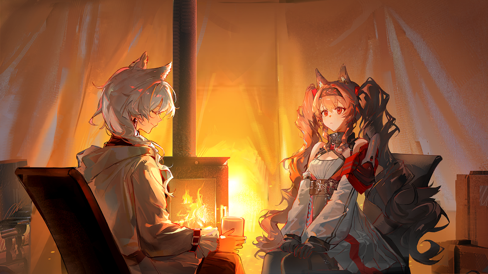
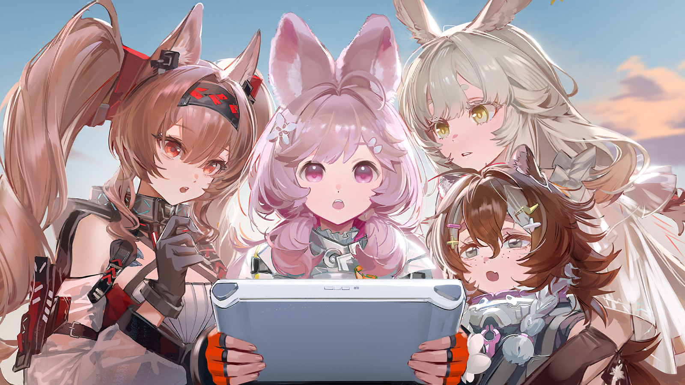
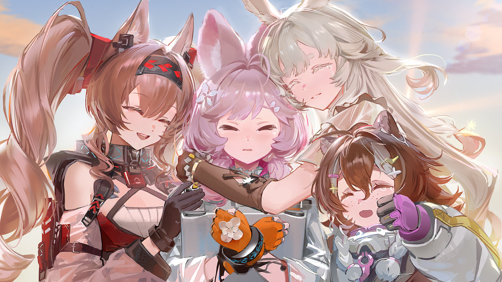

阿梅利亚
“小飞虫”全被它们打掉了......怎么办？

嘉辛塔
别看我，我飞不起来！

塔妮
......这根本没完没了啊！
塔妮
安洁，能不能像在大铁屯那样来个厉害的法术——不，把你的法术反过来，让所有的有袋鼷兽都落在地上？

安洁莉娜
可以是可以——
一只有袋鼷兽又朝着安洁莉娜肩头上的一撮毛飞过来，安洁莉娜一边施术一边勉强避开。

安洁莉娜
——它们实在不构成什么真正的威胁，我怕它们摔在地上会有危险......

塔妮
可我们身上的家当都要被偷干净了！

一撮毛
叽......
塔妮
而且一撮毛看起来越来越害怕了！
话虽如此，要在有袋鼷兽集群的威胁下保护一撮毛，倒也绰绰有余。
为首的有袋鼷兽显然也意识到了这一点。它在空中盘旋了数周，将袋子塞得满满当当的同伴们招呼到一起，而后......

有袋鼷兽集群
叽叽叽，嘎嘎嘎嘎！
塔妮
又在搬救兵了！

嘉辛塔
刚刚那只这么叫就叫来了一大群，一群都这么叫，要叫来多少啊？

阿梅利亚
会不会......是要叫来最大最强的那一只......

塔妮
我听见了......的确有什么很大的生物要来了！
塔妮
比最大的那只还要大得多，甚至可以用两只脚站在地上往前走，身上披着的布料有一个人那么高——

塔妮
出现了啊啊啊——

？？？
嗯？出现了？谁？我？

塔妮
就是你——
塔妮
呃......嗯？

塔妮
你......不是有袋鼷兽？
？？？
安洁莉娜，你觉得呢？
尽管被点到名字，安洁莉娜却好长时间没说出话来。
眼前的人当然不是有袋鼷兽。
那是在她陷入困境时向她伸出援手的人，是她一直想见又一直错过的人，是她倾吐心中疑问和烦恼的人。
可......为什么是在这里？
是巧合？是心灵感应？还是......
但她毕竟就站在了自己面前。
安洁莉娜
玛蒂娜......

玛蒂娜
又见面了，安洁莉娜。

陌生的有袋鼷兽
叽叽叽——嘶咔嘶咔嘶咔——叽叽！
玛蒂娜
嗯？

陌生的有袋鼷兽
叽叽叽叽！嘎嘎！

玛蒂娜
嗯。嗯？

塔妮
（小声）这就是你说的帮过你的玛蒂娜女士？
安洁莉娜
（小声）没错。
塔妮
（小声）她看起来和那只有袋鼷兽聊得很开心的样子......她真不是什么会变形的有袋鼷兽奶奶吗？
安洁莉娜
（小声）怎么可能啦——

玛蒂娜
安洁莉娜，它质问你为什么要绑架它的孩子欸。

安洁莉娜
欸？！
玛蒂娜
......噗。
玛蒂娜
它说，你们四个绑架了它的孩子，它作为母亲打不过你们，只能呼唤孩子爸爸带着家人全体出动。
嘉辛塔
原来......我们是这样的形象吗？那，玛蒂娜女士，您又是一撮毛的......呃......什么亲戚？
玛蒂娜
噗！
玛蒂娜
我倒真想像有袋鼷兽一样飞得又快又稳当，那样的话，说不定就能做一名比安洁莉娜更优秀的信使了。
玛蒂娜
可惜我只是个来观察野生动物的闲人，碰巧跟它们搞好了关系，所以就被病急乱投医的有袋鼷兽爸爸当救兵搬来了。
玛蒂娜
好了，快让这只小有袋鼷兽见爸爸妈妈吧。
见混乱平息下来，一撮毛小心翼翼地叫了两声。
而四人在南境最初见到的那只有袋鼷兽也用她们此前未曾听过的声音，半是焦急半是疑惑地叫了起来。
几轮对答之后，一撮毛终于不再像刚刚那样畏缩。
它看了看自己这边的四个人，又和自己的母亲交换了一个眼神，张开翅膀在几人身边转了一圈......
把自己装东西的袋子在每个人脸上贴了一下。
玛蒂娜
哎呀，真好。
玛蒂娜
这样做说明它真的很喜欢你们，喜欢到想装进袋子里带走呢。

安洁莉娜
唔......嗯。
一撮毛落在安洁莉娜的手上，用鼻子碰了碰安洁莉娜的指尖，亲昵地叫了一声，而后振翅飞回母亲身边。

嘉辛塔
原来它刚刚一直追着安洁不放，是要把孩子抢回去啊......
嘉辛塔
那一撮毛看起来为什么又那么害怕呢？
这个问题很快得到了解答。
在确认孩子没有受伤之后，有袋鼷兽母亲显然开始训起孩子，一撮毛在母亲面前越缩越小，眼看就要把头都埋到身下去了。
玛蒂娜
啧啧，孩子又没出什么事，哪有你这样一个劲教训的。
玛蒂娜
再说，既然误会已经解开，你们是不是也该把刚刚拿走的东西还回来了？
玛蒂娜
我都忘了，我大概能搞懂它们的意思，可它们听不懂我说话啊。

阿梅利亚
欸——
玛蒂娜
好了好了，我看你们四个也有一肚子问题要问，不如去我的帐篷里慢慢聊吧。
玛蒂娜
光是把你们一路上的见闻讲完，就已经到了凌晨......

塔妮
毕竟中间我们也补了一觉嘛，哈哈......
玛蒂娜
嗯，天就快亮了。
玛蒂娜
真好啊。像你们一样大的时候，我一直幻想着要踏上这样一趟旅程。
塔妮
玛蒂娜女士那个时候还不是信使吗？
玛蒂娜
还不是。
玛蒂娜
从普通视角来看，我是个很幸运的人。正常地上学、成长，甚至进了大学，比其他人多虚度了几年时光。
玛蒂娜
像你们这么大的时候，我每天都盘算着毕业之后应该做点什么，但也只是盘算而已，并未真正为此付出过什么努力。

玛蒂娜
最后当了信使，也不过是因为家里曾有这样的传统，就懵懵懂懂地踏上了这条路而已。
玛蒂娜
如果当时摆在我面前的选择是当个足不出户的文员，或者我家里有什么产业想让我继承，我大概会变成和如今完全不同的样子。

安洁莉娜
不管怎么说，当时是您帮助了我，我也是因为憧憬着您的身影，所以才......
玛蒂娜
所以说，你做得已经比当年的我要好了。

安洁莉娜
真的吗？
安洁莉娜
其实我到南境来，也并不是要主动踏上什么旅途......倒不如说，是因为我的失误和一连串的偶然......

安洁莉娜
您看，这是我本应该代替罗德岛投寄到大涌泉镇的解密器，我把它寄丢了，所以才......
玛蒂娜
原来是寄丢了吗？
安洁莉娜
......欸？
玛蒂娜
真巧，我也收到了一件一模一样的东西。

安洁莉娜
欸？！
安洁莉娜
所以我第一次其实是把解密器寄给您了？！和那封寄给您的信一起？
玛蒂娜
是呀。外面写着寄到大涌泉镇，但毕竟是和你那封信一同寄来的，为了以防万一，我还是开包看了一下。
玛蒂娜
虽然原理和技术完全看不懂，但里面的使用说明我还是读得懂的。是个解密器，要解密的信息来自南境。
玛蒂娜
知道了这些之后，我本来是打算替你把包裹送到大涌泉镇的。
玛蒂娜
但当我找到办事处，正打算进去的时候，我忽然想起了你在信上说的那些话。

安洁莉娜
......
玛蒂娜
正巧那时大断连也发生了，我就想着，要不要看看这个错误究竟会让你做出什么样的选择。
玛蒂娜
我相信你是会主动来弥补自己的错误的。与其在大涌泉镇等你，倒不如直接赶到南境。
玛蒂娜
如果你顺利到达，我就在这里等你；如果穿越风暴的不是你，等罗德岛的人来了，他们也有我做个照应。
玛蒂娜
话又说回来，有袋鼷兽也是我一直想观察的生物，我之所以一溜烟跑到南境来，说不定更大的理由还是观察动物，哈哈。
说着，玛蒂娜从怀中掏出那个安洁莉娜精心挑选过的信封，将它和寄错的解密器放在一起。
安洁莉娜
那段时间我的心一直很乱，本来是想写封信向您诉说心中的烦闷，也期待您能给我一个解答，谁知道......
安洁莉娜
......

塔妮
......！
塔妮
阿梅，你的便携式通讯站是不是还没调试好呢？
阿梅利亚
对、对哦！被有袋鼷兽的事情一搅，我完全给忘了！
嘉辛塔
可安洁不是寄给玛蒂娜女士一封信吗？那封信到底是——
塔妮
先别管那个啦，走啦走啦。
玛蒂娜
言归正传，安洁莉娜，要到哪里才能找到一个不会犯错的人呢？
玛蒂娜
我也做了很长时间的信使，其间也送错过一些信件。这样的事情本就无可避免，又何必为此苛责自己？
安洁莉娜
......
安洁莉娜
关于我在信中问您的问题......

玛蒂娜
“对罗德岛而言，对这片大地而言，对信使安洁莉娜而言......我的位置究竟在哪里？”
玛蒂娜
旅行至此，我想，你已经找到答案了。
安洁莉娜
......真的吗？
玛蒂娜
人的位置，是由自己选择去做的事情来决定的。
安洁莉娜
......自己选择去做的事情。
安洁莉娜
我想做的事情很多很多，可......我越是去做就越是意识到，很多事情，我根本就做不到。
玛蒂娜
比如拯救那些不愿离开城镇的感染者？
安洁莉娜
或者，在罗德岛遭袭那天，站在大家身旁，与大家并肩作战，而不是在安全的地方惴惴不安地等待消息。
玛蒂娜
所以你去做了。做了很多。
安洁莉娜
......欸？
玛蒂娜
如果你什么都不做，也许我们仍然会在某处相遇，但你旅途中遇到的那些人呢？
玛蒂娜
塔妮从此做一个不快乐的接线员，嘉辛塔被保镖逮回疗养院，阿梅利亚在大铁屯屈服于公司的打压......
玛蒂娜
你或多或少改变了她们的生活，她们也或多或少改变了你的。这就是你选择去做了的事情。
玛蒂娜
至于罗德岛遇袭，其中的详细情况我不太清楚。但那时的你，有把握稳稳接住从大铁屯最高处落下的阿梅利亚吗？
安洁莉娜
......没把握。
玛蒂娜
那你又为什么觉得，如果罗德岛再次面临危机，自己没机会站在他们身边呢？
玛蒂娜
你已经是一名非常非常了不起的信使了，安洁莉娜。
玛蒂娜
而罗德岛，想必也已经认为你是他们绝对不可或缺的一员，每个你曾帮助过的人，都在心中为你留下了一席之地。
玛蒂娜
在那个雨夜将你引上信使的路，也许就是我这一生所做的最正确的一件事也说不定。
安洁莉娜
谢谢您，谢谢您......
安洁莉娜
其实我一直都想当面向您道谢，可我们真的错开了太多次，我偶尔甚至会觉得这是否就是所谓命运的安排......
玛蒂娜
不，谢谢你，安洁莉娜。
玛蒂娜
我一直都觉得你没必要谢我，而是我应该谢谢你，谢谢你让我知道，原来一份小小的善意，也会得到如此丰厚的报偿。
玛蒂娜
唔，顺便，关于你在信里提到的另一个问题......

安洁莉娜
我、我不是只提了一个问题吗？
玛蒂娜
让我找找看......就在这里，信的中后段：“我有很多很多想说的话，却不知道该如何开口......这个问题一直困扰着我。”
安洁莉娜
那个，呃，那一段真的只是随手写上去的......
玛蒂娜
那这个问题就......略过？

安洁莉娜
......
安洁莉娜
不，我还是想听听您的看法......我想知道您的意见。
玛蒂娜
我只知道，一份心意在心里藏得太久就会发生变化。可能变好，可能变坏，可能蜕变成蝶，也可能腐坏变质。
玛蒂娜
我不知道这份感情在你心里变成了什么样子，但我想说的是，在它还让你感到快乐的时候，就将它表达出来吧。
玛蒂娜
如果当面诉说会觉得尴尬，那就也像之前一样，写一封信，如何？
安洁莉娜
写信......
玛蒂娜
唔，你怎么来了？
一撮毛的母亲相当抱歉地从口袋中掏出一件、两件、三件......
十几件不久前从四个少女身上拿走的东西。
这些东西都完好无损，甚至还根据归属分成了四个小堆。
玛蒂娜
还好还好。要是你们拿的东西真不还了，我还不知道怎么跟安洁莉娜她们交待呢。
玛蒂娜
不过，你这个袋子到底有多深，能装多少东西啊？为什么好多只有袋鼷兽拿走的东西，你单独一个就全装回来了？
玛蒂娜
那个，请问......
玛蒂娜看向有袋鼷兽的袋子。
玛蒂娜
......能让我探探你的袋子究竟有多深吗？
有袋鼷兽显然理解了玛蒂娜的意思，颇为不满地对她亮了亮爪子。
但它很快意识到这个人并没有真动手的意思，于是转头对安洁莉娜轻轻叫了几声，而后离开帐篷。
安洁莉娜
它们是怎么分辨哪件东西属于谁的？
玛蒂娜
气味。
玛蒂娜
这也是被你们叫做一撮毛的那只有袋鼷兽喜欢和你们在一起的原因......你的气味，其实和它的母亲很像。
安洁莉娜
我？和它的母亲？
玛蒂娜
它的母亲曾经短暂地和人打过交道......而且，是以信使的身份。

安洁莉娜
难道它就是传说中的那只有袋鼷兽？
玛蒂娜
传说总会有现实作为基底，又会鼓动人将其中的内容变为现实。
玛蒂娜
不管怎么说，我刚到南境时，一撮毛的母亲对我的信使装备展现出了非同寻常的了解，顺利从我的包里偷走了不少吃的。
安洁莉娜
哈哈......
玛蒂娜
至于气味相似，则是因为所有承担信使职责的生物身上，都有相同的气味......
玛蒂娜
无数个不同的地区混合起来的气味......泰拉的气味，这片大地的气味。
玛蒂娜
可惜我学不会有袋鼷兽独特的叫声，不然塔妮怀疑我是有袋鼷兽奶奶时，我说不定真的可以吓吓她呢。

安洁莉娜
噗。

安洁莉娜
我从来都不知道您居然是一个爱好观察野生动物，而且......喜欢开玩笑的人。
玛蒂娜
因为我们相处的时间毕竟还是太短了呀，安洁莉娜。
玛蒂娜
......嗯？
安洁莉娜
怎么了吗？
玛蒂娜
你这堆东西里还混着几样我的东西呢。它们果然分不清信使之间的气味。
安洁莉娜
......还真是。
玛蒂娜
好了好了，分赃这种事情还是等天大亮了再说吧。就算半夜补了一觉，我现在也很困了。
玛蒂娜
你去看看朋友们吧？
安洁莉娜
嗯！
安洁莉娜
......嗯？
安洁莉娜忽然从带着塔妮气息的那堆杂物里看见一个陌生的物件。
一个她可以确定自己从未见过，却又听塔妮说起过许多次的物件。
塔妮
安洁，你们聊完了吗？
安洁莉娜
聊完了。玛蒂娜要再睡一会儿，我就先出来了。

嘉辛塔
通讯设备已经调试好了，阿梅利亚的技术没有问题，我们已经可以联系整条线路上所有的节点了。
阿梅利亚
就是带宽还是不如预期，哪怕是文字信息，恐怕也只能到一条一条地跳出来的程度......

阿梅利亚
不过在那之前......
塔妮
让我们先来看看日出吧。
安洁莉娜
的确，已经到了日出的时候......
安洁莉娜
好美......
清晨寒凉，少女们却浑然不觉地注视着远方的朝阳。
那是无情地照耀着一切的太阳。太阳冷漠地审视大地上的所有，喂饱善人也喂饱恶人，照亮产室，也照亮泥泞的战场。
那又是唯独在此时此刻，只属于她们四个的太阳。
由消毒水和查房开启的黎明，与硫磺味交织的刺目晨光，宅院头顶方形的红霞，城市嘈杂晦暗的早高峰......
她们暂时忘了那些。
如同新生的婴儿般，她们只是注视着那橘黄色的光亮。她们看着阳光如涨潮般流溢，看着金黄的新生不住地冲刷着海雾。
她们看着它在某个时分裹足不前，似乎在踌躇、在犹豫，又在下一个瞬间搏动着挣脱寒冷的云层。
她们看着它终于升上半空，疲惫而慷慨地放射温暖的橙黄，毫无保留，直至覆盖她们被海风冻得通红的脸颊。
太阳升起来了。
在比大地的尽头更遥远的地方，太阳升起来了。
安洁莉娜
太阳......升起来了。
塔妮
......嗯。
嘉辛塔
阿梅，来拍张照片吧。来给我们的太阳拍张照片。
阿梅利亚
拍好了。
阿梅利亚
这样一来，我们的这趟旅程......

塔妮
......
塔妮
这趟旅程的确已经结束了。我没关系的。
塔妮
哪怕没有奶奶的怀表，我也已经抵达了南境，见过了最美的日出。
塔妮
是时候给家里发个信息，给他们报个平安，然后告诉他们，我做到了。一路上什么法术也没学会，但我还是做到了。

塔妮
再要让我留在大涌泉镇，没有法术天赋这个借口可不好用了，嘿嘿。
阿梅利亚
那个，大涌泉镇的信号塔不知道有没有修好......不过还是可以发的！等到修好就能收到了！
安洁莉娜
给，塔妮，终端。
塔妮
我想想怎么措辞比较好......
安洁莉娜
还有......这个。有袋鼷兽放在我们四个人的东西里一并还回来的。

塔妮
欸？
塔妮
欸？！
塔妮
这是......怀表？！
塔妮颤抖着从安洁莉娜手中接过那只怀表。
表壳被耀眼的朝阳镀上了一层金边，晃得她几乎睁不开眼，但她仍然从上面读到了她再熟悉不过的名字......
伊娜拉。
她慌忙擦了两把泪水。
路上那些拿着怀表就能如何如何的天真幻想此时早已被她抛开，她现在只为自己能找到奶奶丢失的遗物喜极而泣。

塔妮
奶奶......真是的，居然真的把这么重要的东西丢到南境，还被有袋鼷兽捡到......
塔妮
简直像我一样......笨手笨脚的......
塔妮
明明都已经说了不需要，还偏偏在这种时候冒出来......
塔妮好容易忍住了泪水，擦了擦怀表外壳上斑驳的锈迹。
即便把怀表拿在手里，她也毫无如何使用的头绪，但她已经不在乎了。她只想打开怀表，看看时间在上面留下的痕迹......
然而比表盘更先出现的，是翻盖上的照片。
塔妮的照片。
“奶奶不小心把怀表弄丢了。”
“嗯......落在了哪里呢？可能是大铁屯，可能是太阳谷，可能是南境......”
“小珊比真聪明，既然奶奶一路上还在用怀表，那就没有丢在路上......不，不不，还有回程呢。”
“所以，究竟丢在了哪里呢......？”
塔妮忽然确信，奶奶正是在这里，在这太阳刚刚升起的时分，故意将怀表落在了这里。
她相信自己理解了奶奶的心情。看见了美到令人窒息的景色，交到了一生难忘的好友，突破了前人未至的险阻......
可当太阳升起时，奶奶孑然一身。
那些经历在她胸中跳跃着，却找不到出口，找不到一个可以诉说的人，她眼前只有好奇地飞来的有袋鼷兽——
——所以，她决定，就停在这里吧。
将象征着无数次旅途的怀表赠给在此刻陪伴自己的有袋鼷兽，感谢它们让自己不至于太过孤单。
而后，就停在这汹涌的阳光之下，将这场盛大的日出作为自己探路者生涯的终点。而后，回到塔妮身边......
回到她爱的人，和爱她的人身边。
塔妮
奶奶不光笨手笨脚，还是个不坦率的坏蛋，觉得难为情，结果在我面前说了谎......
塔妮
明明是把怀表放在南境了，明明就是想要家人陪了，却非要说是弄丢了......
塔妮
......
塔妮
不能哭。不能在这里哭！
塔妮拼命忍住泪水，把怀表珍重地收进怀中，再度将终端放在自己面前。

塔妮
我得告诉家里这个消息。告诉他们我找到了奶奶的怀表，告诉他们奶奶真的到了南境......
塔妮
我有好多好多事情要告诉他们。奶奶的事，我的事，我以后的事......
塔妮
我——
塔妮
是、是信息......好多信息？！
From塔克舅舅：铁脚队赢了，180/5比165/8。好不习惯没有小珊比打拍子的击球赛啊。
From爸爸：别理你塔克舅舅，就当那个是测试消息。怎么样？路上玩得开心吗？有什么需要的？......虽然可能追不上你但还是问问！
From爸爸：我们现在在洋蓟村！我打听了一圈，说是这里的远程通讯修好了，就来这里给你发消息！听说你也在里面出了力，真棒！
From妈妈：旅途开心吗？你爸爸抱着终端不撒手，我好容易抢过来。外面的饭菜吃得习惯吗？
From妈妈：如果坏肚子了，可以试试把胡萝卜叶烧成灰冲水，对肠胃有好处。
From妈妈：买鞋记得买大一号，这还是你奶奶告诉我的。大一点的鞋可以垫鞋垫，小鞋就没办法了。
......
From妈妈：杂七杂八说了这么多，其实你生日那天的事......我们都欠你一个道歉。你是大人了，你该做你自己想做的。
From爸爸：不聊这些。记得帮我们拍点照片！既然你要去南境，听说那里的景色很漂亮，帮爸爸拍几张照片，爸爸想挂在家里的墙上！
From妈妈：别听你爸爸的，多拍拍自己，拍得漂亮一点！
......
克制多时的泪水终于决堤。
终端上的消息还在一条接一条地跳出来，但塔妮已经哭得上气不接下气。

清晨的阳光下，少女们相拥而泣。